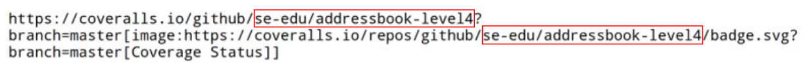

Coveralls is a web service that tracks code coverage over time for GitHub projects. Coveralls requires Travis CI to be set up beforehand as Travis sends the coverage report from the latest build to Coveralls. If you have not set up Travis CI, see UsingTravis.adoc. Currently, Coveralls supports Travis CI but not AppVeyor.
Setting up Coveralls
-
Go to https://coveralls.io/ and click
SIGN IN. Then clickGITHUB SIGN INand enter your GitHub account details if needed. -
After logging in, you will be brought to the
Your Repositoriespage. On the site’s navigation bar, click ADD REPOS. -
Find the switch for the forked repository.
-
If the organization is not shown, click
GITHUB SETTINGSas shown below:
This should bring you to a GitHub page that manages the access of third-party applications. Depending on whether you are the owner of the repository, you can either grant access

or request access

to Coveralls so that it can access your repository.
-
If your repository cannot be found, click
SYNC REPOS.
-
-
Activate the switch.

-
Update the link of the
Coverage Statusbadge at the top of your README.adoc to point to that of your own repo by replacing the outlined areas withyour-org-name/your-repo-name.
-
You can now see the coverage report for your project after each Travis build by clicking on the
Coverage Statusbadge.
Disabling Coveralls Automatic Comments on Pull Requests
Coveralls automatically comments on the coverage status of the pull requests in GitHub. If it’s a hindrance, you can disable it in the settings of your project in Coveralls:
-
Click
Settings. -
Uncheck the
LEAVE COMMENTS?checkbox. Then clickSAVE CHANGES.